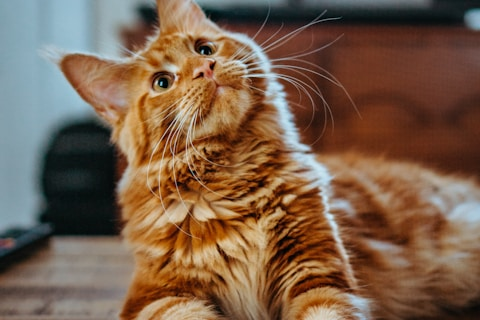
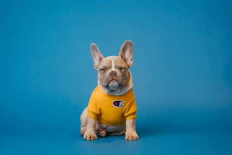
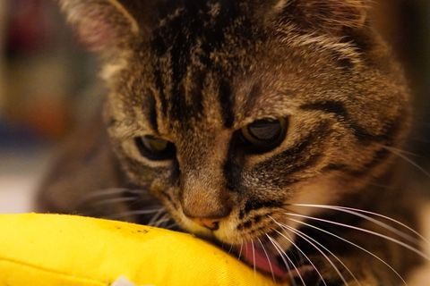

Max
DisponibleDisponible para adopción
Disponible para adopción

Adoptado: 2026-03-15
Disponible para adopción

Adoptado: 2026-02-28
Disponible para adopción

Adoptado: 2026-01-20
Disponible para adopción

Adoptado: 2026-03-02

Disponible para adopción

Adoptado: 2026-04-10
Acción completada